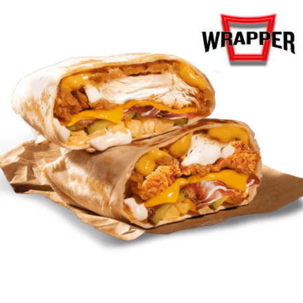

KFC - Kentucky Fried Chicken
KFC (Kentucky Fried Chicken) osnovan je 1952. godine i specijaliziran je za prženu piletinu. Najpoznatiji je po svom secret recipe začinu.
KFC, skraćenica za Kentucky Fried Chicken, jedan je od najpoznatijih lanaca brze hrane na svijetu. Poznat je po svojoj jedinstvenoj recepturi pohane piletine koju je osmislio Harland David Sanders, poznatiji kao "Colonel Sanders". Njegova tajna mješavina 11 biljaka i začina postala je zaštitni znak brenda i razlog zbog kojeg milijuni ljudi svakodnevno uživaju u ukusnoj i hrskavoj piletini diljem svijeta.
osnovan je 1952. godine u američkoj saveznoj državi Kentucky, i od tada se proširio na više od 150 zemalja, s preko 25.000 restorana. Colonel Sanders je svoj prvi restoran otvorio uz benzinsku postaju gdje je pripremao piletinu za putnike. Zahvaljujući posebnom načinu pripreme u tlakovitim fritezama i korištenju njegove tajne mješavine začina, piletina je bila iznimno ukusna i brzo je stekla vjernu bazu obožavatelja.
KFC se ističe ne samo po okusu, već i po svojoj vizualnoj prepoznatljivosti – logotipu s likom Colonel Sandersa, crveno-bijeloj boji interijera i pakiranja, te specifičnim imenima jela poput Bucket, Zinger, Twister, Hot Wings i Popcorn Chicken. Njihova “bucket” (kanta) s piletinom postala je ikona fast food industrije.
On nije samo američki brend – to je globalna ikona brze hrane. S restoranima na gotovo svakom kontinentu, KFC je uspio prilagoditi svoj jelovnik i pristup lokalnim kulturama i prehrambenim navikama. U Kini, na primjer, KFC je jedna od najpopularnijih zapadnih prehrambenih marki, gdje nude jela poput riže s piletinom, lokalnih juha i čajeva. U Indiji, zbog velikog broja vegetarijanaca, nude posebne bezmesne menije. Ova sposobnost da se prilagode lokalnim ukusima čini KFC izuzetno uspješnim u međunarodnom poslovanju.
posluje primarno kroz franšizni model, što znači da većina restorana nije u vlasništvu same tvrtke, već ih vode neovisni poduzetnici pod KFC-ovim brendom. Ovo omogućuje brzi rast, fleksibilnost i prilagodbu tržištu. Franšizni model osigurava dosljednost u kvaliteti hrane, izgledu restorana i korisničkom iskustvu. KFC je u vlasništvu Yum! Brands korporacije, koja također posjeduje poznate lance poput Pizza Huta i Taco Bella. Zajedno čine jednog od najvećih igrača u globalnoj industriji brze prehrane.
poznat je po svojim kreativnim i ponekad humorističnim reklamama. Često koriste lika Colonel Sandersa u različitim oblicima – glumci, animacije pa čak i virtualna stvarnost. Njihove kampanje su duhovite, prepoznatljive i često viralne, a sve s ciljem stvaranja emocionalne povezanosti s korisnicima. Posebno su poznate kampanje za praznike (npr. božićni bucket u Japanu) i limitirana izdanja proizvoda koja stvaraju dodatni interes, poput sendviča s duplim slojem mesa umjesto kruha ili ultra-ljutih krilaca.
Najpoznatija hrana mu je Kentucky Gold Wrapper
